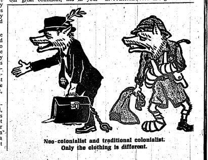

Conclusion
L’un des aspects de notre mémoire fut de défendre la pertinence d’étudier le néocolonialisme pour comprendre l’histoire du développement en Afrique au tournant de la décolonisation. En étant un sujet encore au cœur des débats politiques en France et en Afrique, l’objectif était de taille. En ce sens, plusieurs experts renoncent à l’usage du terme « néocolonialisme » pour deux raisons principalement. D’abord parce qu’ils estiment que le terme induirait une logique victimaire, où les Africains sont déresponsabilisés de tous les problèmes. Ensuite parce que le néocolonialisme se résumerait à un plan malveillant, pour ne pas dire machiavélique de recolonisation de l’Afrique.
Cependant, ce mémoire aura permis de voir que le néocolonialisme est un concept plus compliqué et nuancé. D’emblée, nous avons fait usage des conceptions uniques de Touré et Nkrumah au sujet du néocolonialisme. Dans la même occasion, nous avons souligné les nombreuses limites de leurs conceptions tout en indiquant les nuances importantes qui font du néocolonialisme un concept pertinent pour tous les historiens de l’histoire de l’Afrique contemporaine. À la question de la logique victimaire, nous avons démontré l’importance de la participation active des élites politiques africaines dans la mise en place et la pérennisation du néocolonialisme. Puis à la question d’un plan « machiavélique », nous avons présenté qu’aussi bien au niveau politique, militaire ou économique, bien que les conséquences soient avantageuses pour la France, dans la mise sur pied de certaines politiques, il y a constamment un fond pragmatique important. Par exemple, dans la facette militaire, la France tente réellement de mettre sur pied une armée uniquement africaine – or, le défi de recrutement ralentit le processus, laissant à désirer ces « armées ».
Par conséquent, les paroles de professeur d’histoire émérite de l’Université du Mississippi Godfrey Uzoigwe résument avec acuité l’ambiguïté du terme :
Should we then conclude, as some do, that political and geopolitical neocolonialism constitutes an unmitigated evil? It would be historically indefensible to accept such an assessment. Neocolonialism has, for example, led to the development and ongoing refinement of democratic institutions, political constitutions, political practice and behavior; a deeper awareness of civil rights and obligations; limitations on governmental power; the sanctity of electoral votes; the strengths and weaknesses of national, regional, and international organizations; and the complexities of international diplomacy in the Global South.Godfrey N. Uzoigwe, « Neocolonialism Is Dead », 2019, p. 70.
Afin de prouver la pertinence de l’usage du concept du néocolonialisme et de la politique néocoloniale en tant que champ historique, le premier chapitre a permis d’établir les bases importantes des acteurs et enjeux au cœur de la confrontation issue du néocolonialisme. D’abord, nous avons affirmé que la France a pensé à sa politique néocoloniale bien avant la décolonisation, dès les années 1930. Grâce aux multiples réflexions de différents acteurs majeurs français comme Eirik Labonne, François Mitterrand, Michel Poniatowski et Claude Cheysson, la France est sans contredit prête à appliquer sa politique de contrôle et d’influence en Afrique dès que la décolonisation à la fin des années 1950. Ultimement, c’est par la pratique de la coopération, une idée qui avait été réfléchie par Mitterrand puis renforcée par Cheysson, que la France assure le contrôle de la décolonisation. Au même moment, Sékou Touré et Kwame Nkrumah, fortement marqué par leurs expériences coloniales respectives, observent et postulent simultanément des concepts que nous rassemblons comme une « idéologie anti-néocoloniale » sous l’égide d’une boussole. Cette boussole promet à la fois de se prémunir tout comme offrir une alternative viable au néocolonialisme dont la France propose aux États-nations.
Il s’agit du premier constat important de notre mémoire : le néocolonialisme était « inévitable » lors de la décolonisation, puisque la France avait préparé sa stratégie, en s’assurant de maintenir une relation inégale, ayant toujours comme trame de fond la relation coloniale.
Par la suite, les trois chapitres suivants se sont attelés à identifier les différentes manifestations du néocolonialisme ainsi que les conceptions faites de ces manifestations selon Sékou Touré et Kwame Nkrumah. La porte d’entrée du néocolonialisme politique est la coopération, où la France parvient à maintenir l’état de dépendance sur les nouveaux États-nations, puis par le fait même, mettre en œuvre sa politique de balkanisation des États africains. L’Élysée poursuit sa mission néocoloniale à travers la politisation des ressources naturelles, qui permettent d’abord d’assurer la continuité des inégalités, ce qui mène à la quatrième manifestation, c’est-à-dire l’affaiblissement du pouvoir politique des États-nations, réduits à des pays du Tiers-monde. Enfin, l’ensemble du néocolonialisme se résume dans l’apparition d’une « Françafrique », où les manifestations de l’influence et du contrôle sont l’ultime témoin d’une participation informelle de la France dans la vie politique en Afrique.
Il était ensuite question du néocolonialisme militaire. La présence des bases militaires remplit une double fonction de pression et d’influence. Si ces manifestations agissent à « découvert », il y a sans contredit deux autres manifestations plus subtiles. La politique de conspiration et de surveillance permet à la France d’organiser des mouvements dans le secret ainsi que de mener des missions d’espionnages. Finalement, les accords de coopération interviennent également dans le néocolonialisme militaire afin de pérenniser la présence et l’autorité militaire de la France en Afrique. À cette fin, l’Élysée multiplie les interventions, tous et toutes justifiés par le cadre légal de la coopération.
À l’image du politique et du militaire, le néocolonialisme économique est un facteur important dans l’arrimage du néocolonialisme dans les nouveaux États-nations. En effet, la France capitalise sur cette prédisposition naturelle des États-nations à travailler désavantageusement avec la France ce qui a pour incidence de subordonner les nouvelles économies au pas de l’Élysée. À partir de l’exploitation de la prédisposition et de la subordination des États africains, la France peut vraisemblablement mettre en œuvre les autres manifestations : l’exclusivité des intérêts économiques français dans le franc CFA et la zone franc tout en dissimulant l’ensemble à travers « l’assistance » et « l’aide » économique. Finalement, le néocolonialisme se manifeste aussi dans la façon dont la France profite du marché mondial pour subordonner les États africains. Dès la décolonisation, les intérêts financiers français dominent les intérêts économiques des États-nations, laissant donc le développement de ces derniers au dépourvu des aléas de l’Élysée. Ensuite, dans ce système inégal imposé par la France et les autres conglomérats financiers, les nouveaux États-nations sont marginalisés, réduits à un rôle économique de pays en « sous-développement ».
C’est à travers ces découvertes que résident nos autres constats concernant les conceptions de Sékou Touré et Kwame Nkrumah vis-à-vis le néocolonialisme français. D’une part, il faut souligner l’importance du contexte d’écriture : aussi bien chez Touré que Nkrumah, l’heure n’est pas au « descriptif ». Les deux sont aux prises avec divers évènements personnels et la rédaction de leurs ouvrages devient un moyen de diffuser des idées pour expliquer les évènements, pour défendre des décisions, pour convaincre des solutions et pour ébranler la présence étrangère. Nous avons observé, tant chez Touré que chez Nkrumah, un durcissement dans la position défendue et les conceptions présentées au tournant des années 1970. Cela s’explique sans contredit par les évènements du 24 février 1966 au Ghana : le coup d’État mettant fin au pouvoir de Kwame Nkrumah. Le coup d’État joue un rôle capital dans la vision des deux pères des indépendances.
Nkrumah se démarque de Touré dans la perspicacité de son interprétation et de son analyse. Effectivement, Nkrumah rédige ses deux ouvrages en 1963 puis 1965, alors que la majeure partie des conséquences du néocolonialisme sont relativement récentes. Le Ghanéen fait preuve de rigueur dans son analyse, bien que, comme chez Touré, sa partisanerie trahit l’objectivité.
Une seconde distinction importante à apporter entre les deux se trouve dans l’importance accordée à différentes manifestations du néocolonialisme. La dimension politique occupe une position importante dans la conception du duo. Cependant, la dimension militaire préoccupe surtout Sékou Touré, tandis que Kwame Nkrumah accorde son attention vers la dimension économique. Nous interprétons cette différence par le parcours singulier des deux hommes, puisque Touré a vécu plusieurs évènements se reliant à l’aspect militaire, tandis que Nkrumah, au Ghana, a davantage été touché par les notions économiques.
Finalement, une troisième découverte se situe au niveau de l’identification des « coupables ». Consciemment ou non, le duo identifie régulièrement les personnes problématiques lorsque cela est opportun, plus particulièrement lors de la conception du néocolonialisme politique et militaire, où les dirigeants africains ont une grande part de responsabilité selon le duo. Or, c’est tout le contraire dans le néocolonialisme économique. Soudainement, l’élite politique africaine tombe victime du système capitaliste qui les asphyxies. Pourquoi le duo renonce-t-il d’admettre la participation importante des africains, comme ils ont pu le faire pour la dimension politique et militaire? Nous postulons que le duo souhaite mettre l’accent sur le danger du capitalisme tout en promouvant les bienfaits du socialisme. Toutefois, en contexte de Guerre froide, une telle tentative est relativement difficile. De plus, avec l’historique de l’affrontement idéologique entre Africains (Monrovia contre Casablanca notamment), Touré et Nkrumah reconnaissent qu’il faut absolument un ennemi commun pour rallier les gens, sinon les discussions n’iront pas dans leur direction. Conséquemment, en présentant l’ensemble des chefs africains comme des victimes, le duo souhaite gagner la sympathie et l’engagement des autres dirigeants africains (pourtant dénigré lorsqu’il est question du néocolonialisme militaire et politique…).
Enfin, ajoutons que dans la conception économique du néocolonialisme, Kwame Nkrumah identifie les États-Unis comme les participants qui aggravent le plus la situation néocoloniale en Afrique. Dans son approche sur le néocolonialisme économique, Nkrumah retire consciemment ou non l’agentivité des Africains au profit de l’identification d’un système malfaiteur. Cela détonne avec le reste de son analyse où tant dans le politique que le militaire, Nkrumah s’assurait de souligner la participation des Africains dans le néocolonialisme. Pourquoi? Depuis l’indépendance du Ghana, Nkrumah entretient une relation économique avec les États-Unis. En 1965, lors de la publication de son ouvrage qui critique fortement les États-Unis et le danger du néocolonialisme, nous croyons que Nkrumah est conscient qu’il pourrait se faire critique. Bien qu’il souligne régulièrement que l’aide étrangère peut être accepté si l’État receveur ne se laisse pas imposer des tarifs et des conditions, il n’en demeure pas moins étrange, pour les autres politiciens africains, de voir Nkrumah faire un « pacte » avec le pays considéré au cœur du néocolonialisme économique. Nous croyons qu’en retirant l’agentivité des Africains dans cette dimension précise, Nkrumah souhaite se positionner « comme les autres », c’est-à-dire à un certain niveau comme une victime potentielle du néocolonialisme. Dès lors, il apparait moins comme voulant faire la morale aux autres hommes politiques africains et davantage comme un des « pères des indépendances » égaux aux autres. Ironiquement, quelques mois après la parution de l’ouvrage qui critique ouvertement les États-Unis, Nkrumah sera la cible d’un coup d’État commandité par… les États-Unis.
Ce mémoire fut également l’occasion de mener une première recherche sur le néocolonialisme. Nous estimons que l’Afrique a été témoin des balbutiements de la politique néocoloniale, qui fut par la suite appliquée à certaines autres situations dans le monde. Maintenant que nous avons établi des paramètres clairs sur ce qu’est le néocolonialisme à travers les perspectives de deux leaders politiques majeurs, nous souhaitons pousser nos recherches en y ajoutant deux nouveaux éléments : la dimension culturelle et, surtout, une nouvelle dimension géographique. Nous comptons étendre notre mémoire vers une thèse doctorale, où la question du néocolonialisme touchera le Québec (avec le Canada), l’Égypte (avec les intérêts britanniques majoritairement) tout en conservant en filigrane les pays de l’Afrique de l’Ouest qui fut au cœur du mémoire. À nouveau, nous ferons appel à de nouveaux protagonistes pour comprendre les évènements à travers les perceptions de ceux ayant vécu la période de 1960 à 1990 : outre Kwame Nkrumah et Sékou Touré, nous aurons aussi Gamal Abdel Nasser (Égypte) et, pour le Québec, André d’Allemagne et Pierre Vallières.